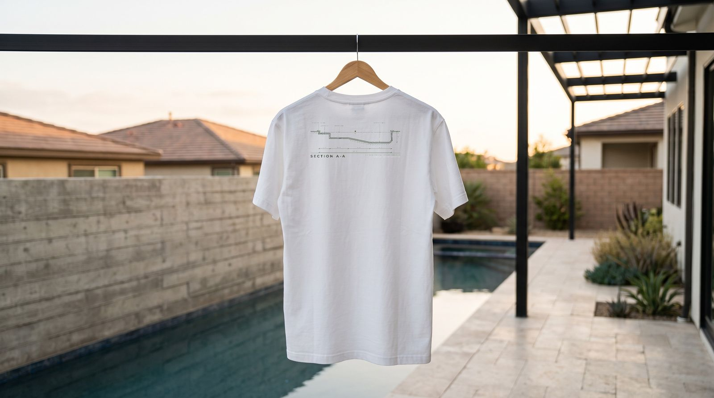
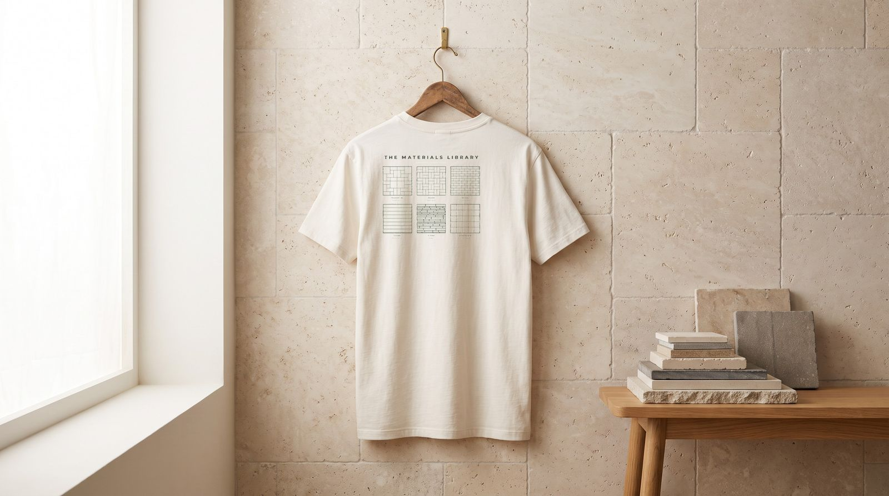
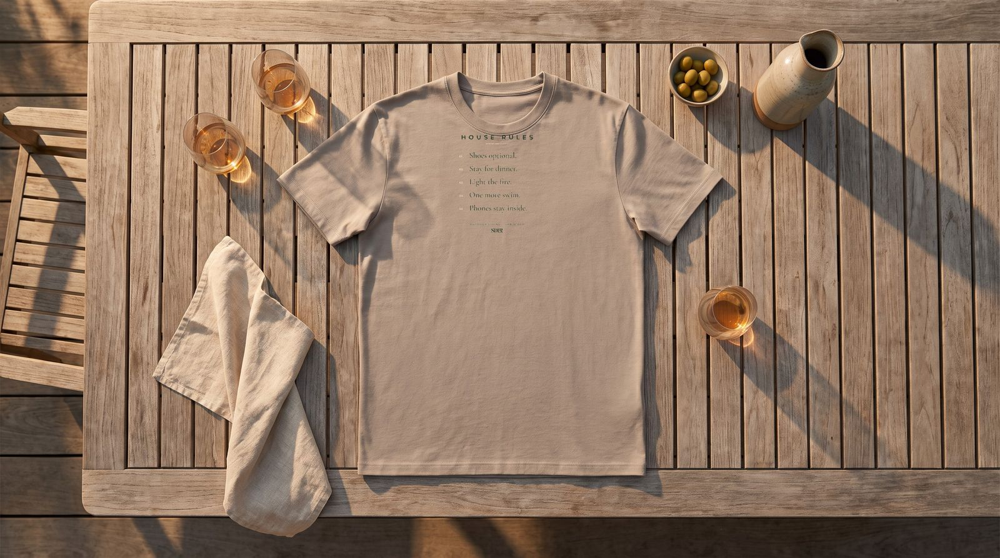
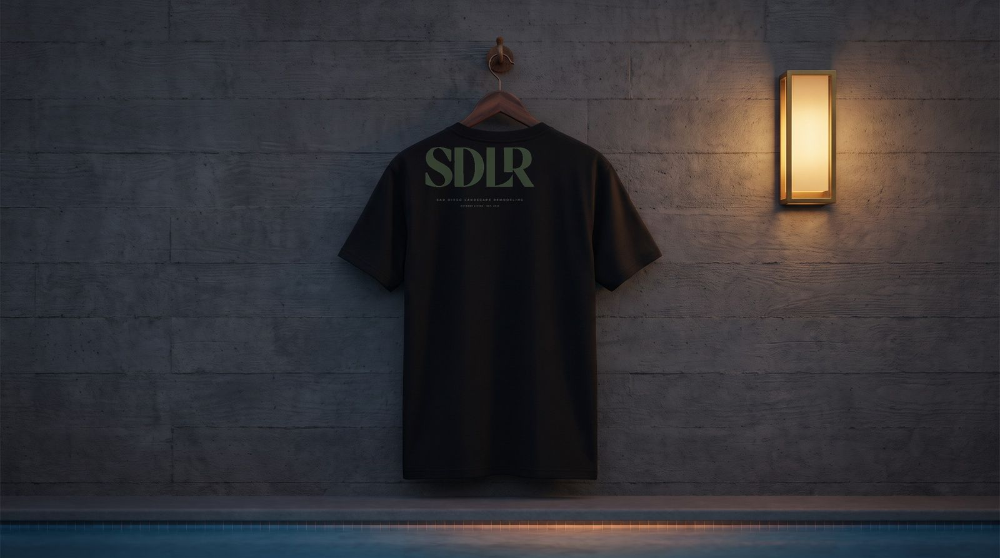
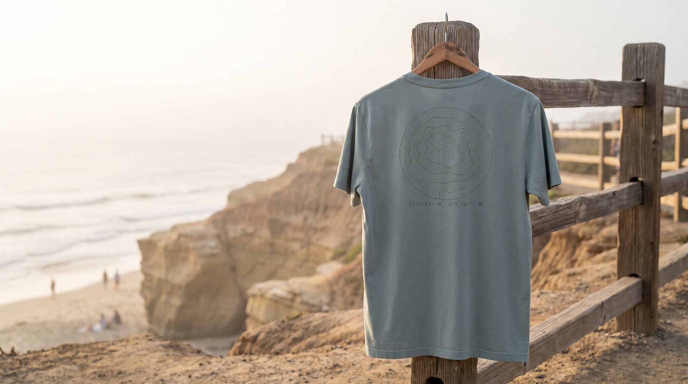
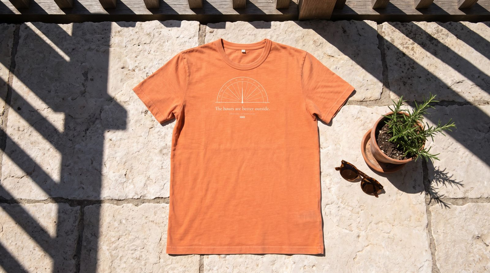
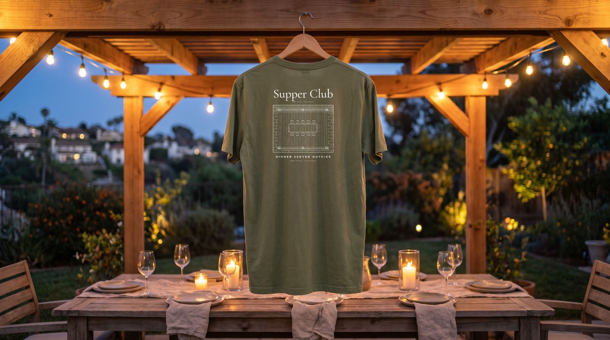
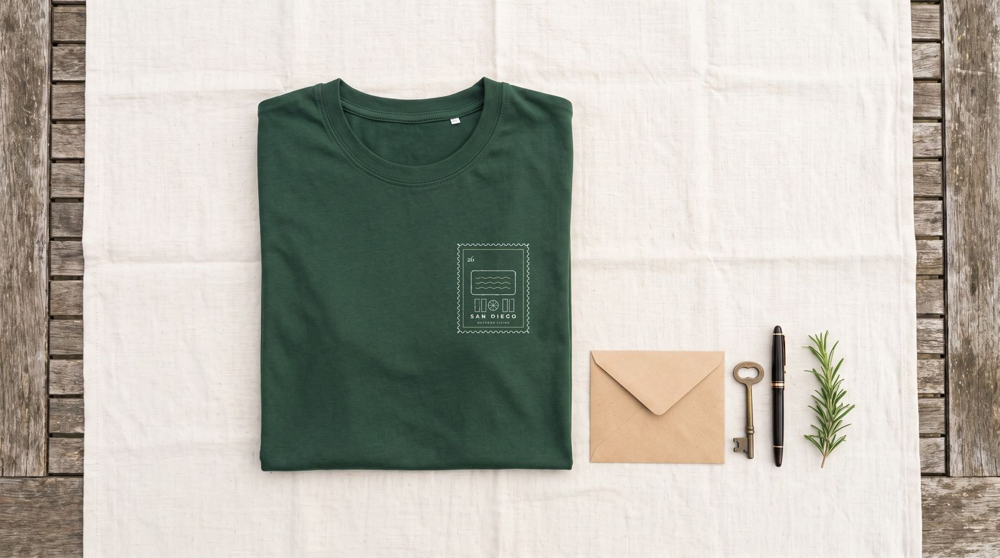
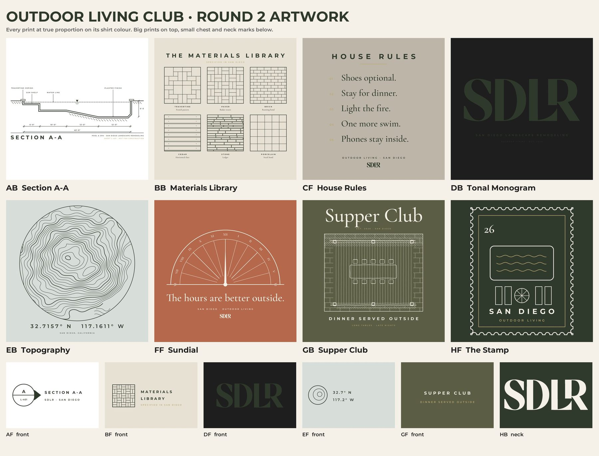

All-new designs: an architect's pool section, a materials library, house rules, a tonal monogram, topography, a sundial, a supper club and a postage stamp. Still minimal, still SDLR, nothing repeated from round 1.
WaitingRound 1 stays in the version history. Pick favourites from either round.









| File | One layered Illustrator file, 14 artboards (one per print location), live type, monogram from the brand vector set, hidden shirt-colour preview layer. |
| Inks | Forest #2E382B, Gold #BDA572, Cream #F5F1E8 (spot). Shirts: white, bone, stone, black, sea salt, terracotta, olive, forest. |
| Type | Cormorant Garamond and Montserrat. |
| Notes | The Tonal Monogram needs an opaque ink, so ask for a test print. The topography is a designed landscape at downtown San Diego's coordinates. |
The layered Illustrator file, mockups and README are in Drive under 02 Clients/san-diego-landscape-remodeling/assets/print-ready/apparel/2026-11-22-lifestyle-collection-v2/.